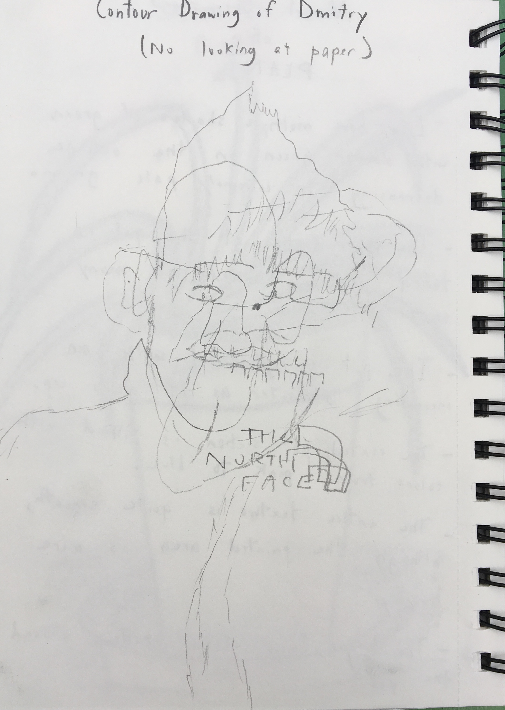
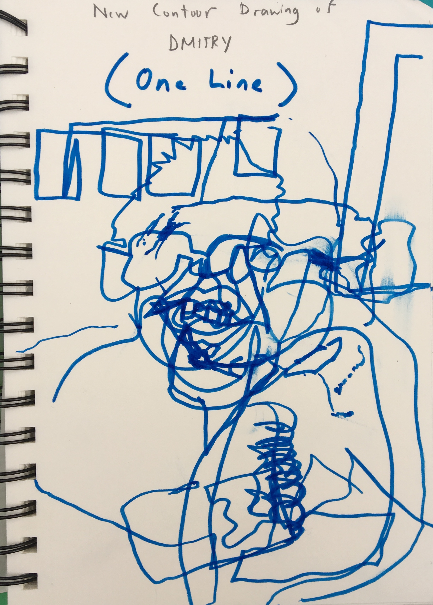

Contour Sketches
 
Mediums: 0.7 mm Mechanical Pencil, Blue Felt-Tipped Marker, Sketchbook Paper
This was one of the strangest but at the same time most fun projects we did this cycle. We had to draw one of our classmates in contour style, in which you draw without looking at the paper you are drawing on. Dmitry and I decided to sketch each other, but the final results ended up looking nothing like what we were aiming for. Naturally, most of our group had results as strange as the ones I got, both the first time when we used pencil and the second time when we used a marker.